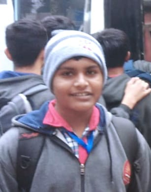
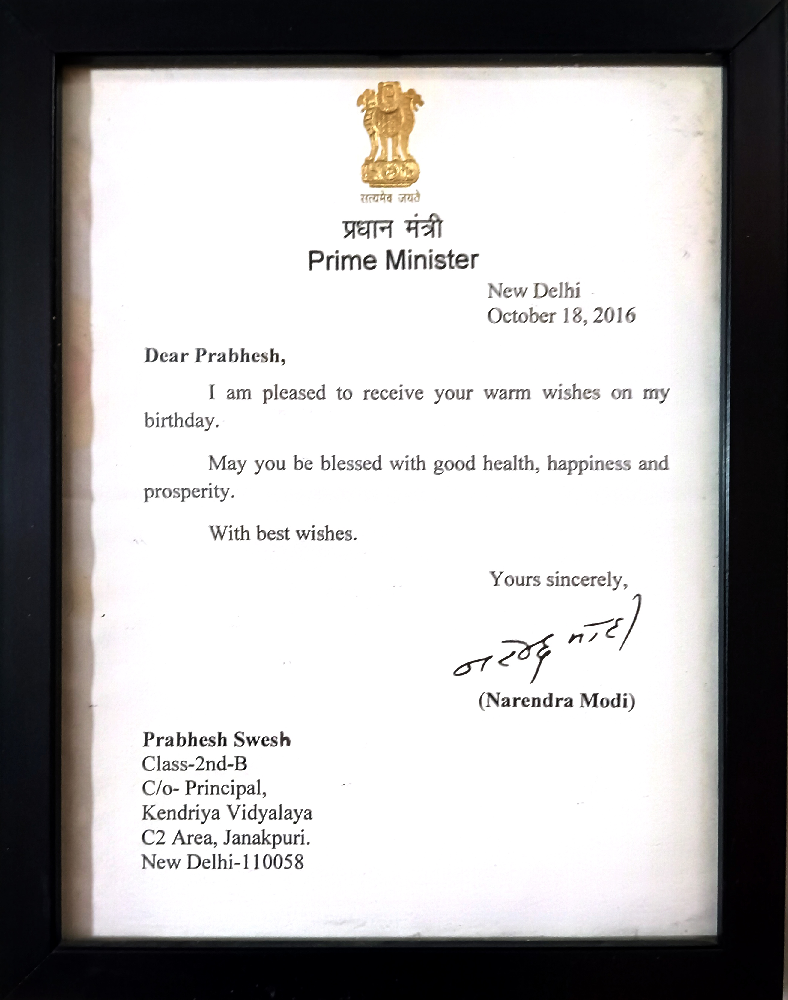

From,
Shubham,
Mahavir Enclave, New Delhi - 110045.
I am in Class 10th, I got more than 20 certificates in different activities, which started in Kindergarden. I got a letter in primary from our H'onable PM, Modi Ji. I have around 3-5 medals,
I like playing games (offline, online both), coding, avoiding the use of Windows & use Linux instead... and uh.. I guess... that's it.
I have created few mods for MC Java (specifically Ported to Fabric) and other things are on my Profile (README page).
I use Discord, YouTube (& Gmail 💀).

